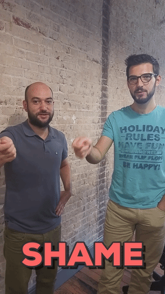
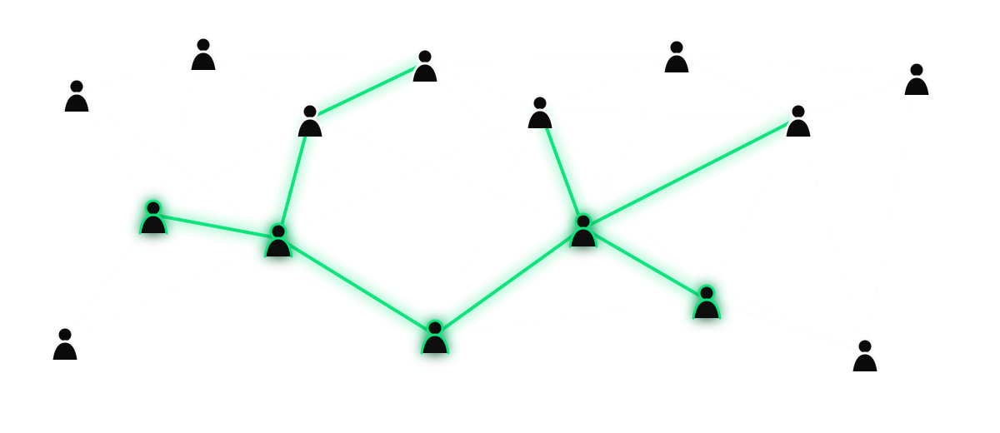
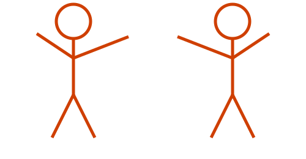

Maintenance still matters.
It might look different, but you still gotta do it.
SatCamp Lightning Talk
This is what we’re seeing from inside our work.
Not just people with “software engineer” in their title. It wasn’t that bold of a prediction.
Last year
Denial
“It can’t do real work.”
→
Anger
“This isn’t coding.”
→
Bargaining
“Only for boilerplate.”
→
Despair
“Well, this is awkward.”
→
This year
Acceptance
“This is how we build now.”
Last year: grappling with the changes.
Last year
Denial
“It can’t do real work.”
→
Anger
“This isn’t coding.”
→
Bargaining
“Only for boilerplate.”
→
Despair
“Well, this is awkward.”
→
This year
Acceptance
“This is how we build now.”
This year: the question changed from “Will we?” to “How do we do it well?”
People aren’t waiting for a software team to start building — and their projects work.
Our partners help create software with AI tools.

We’re always learning.
“Vibe-coding” has many flavors.

Connections and iteration are needed to create excellence
Product questions should preceed develpoment
Human-centric design still requires humans
Vibe-coded projects can be excellent software.
Tests — CI/CD — Architectural patterns — Sharp, focused tools
True · Kind · Necessary
Small PRs · Understand your contribution · Short feedback loops · Shared ownership
It might look different, but you still gotta do it.
When it’s so easy to make your own thing, why would you help on an open-source project?
More room for design, more room for post-delivery documentation and engagement.
How do we align incentives towards the three filters?
True · Kind · Necessary


satcamp.xyz